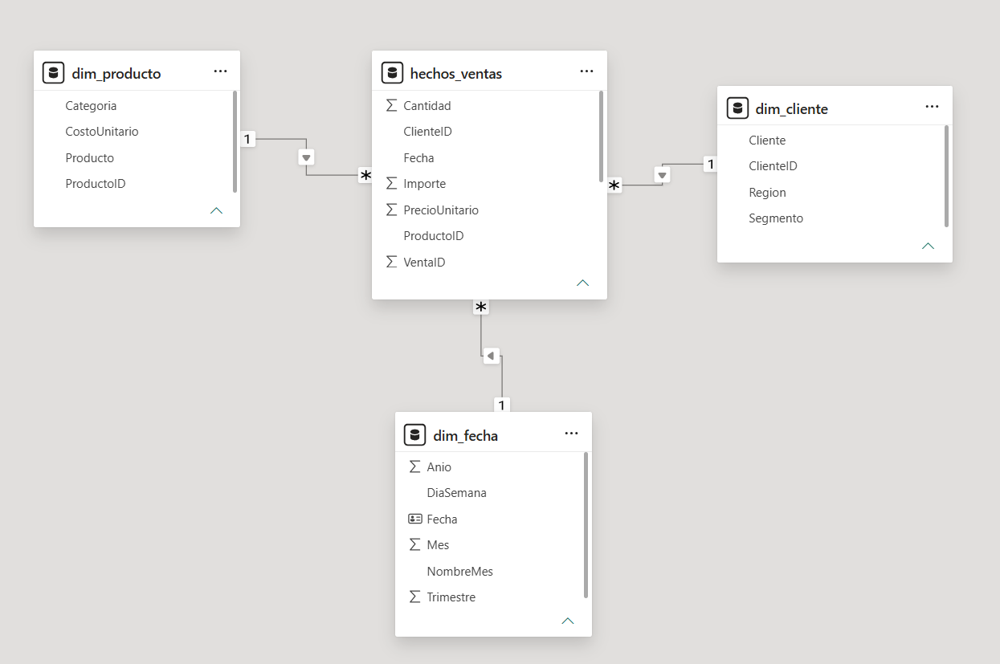
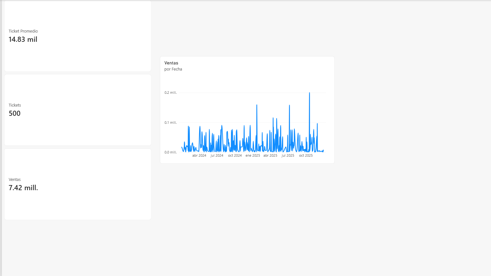
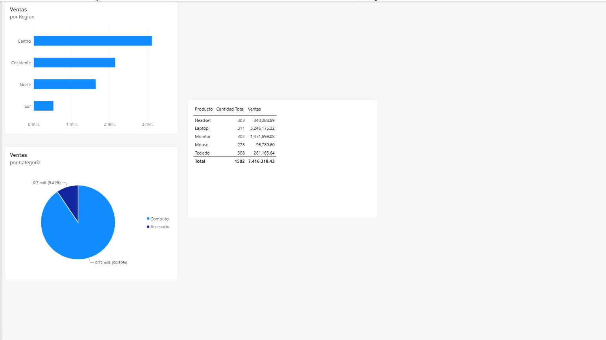
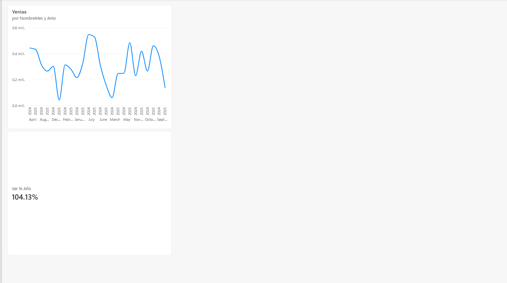
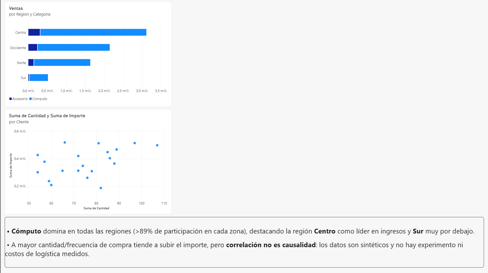

Curso: Análisis y Visualización de Datos
Autor: Axel Said Zempoaltecatl Meza
Fecha: 23 de Noviembre del 2026
Grupo: 6952
Pregunta de negocio: ¿Qué categorías de producto y regiones geográficas concentran los mayores ingresos entre 2024 y 2025, y cómo debe priorizarse la distribución de inventario y la estrategia comercial para mejorar el desempeño general?
Decisión que organiza el análisis: Determinar cómo asignar el inventario y enfocar los esfuerzos comerciales entre categorías de producto y regiones geográficas, identificando qué líneas sostienen los ingresos y en qué zonas existen brechas o oportunidades de crecimiento entre 2024 y 2025.
Usuario principal del tablero: Gerencia Comercial y Dirección de Ventas, responsables de la planeación comercial, asignación de recursos por región/categoría y seguimiento del desempeño de ventas.
• Ventas: Suma del importe total de ventas facturadas en el periodo analizado
• Tickets: Total de transacciones o tickets únicos registrados
• Ticket Promedio: Importe promedio generado por cada ticket
• Ventas por Fecha: Importe total de ventas por fechas
• Ventas por Región: Suma del importe de ventas agrupado por zona geográfica para comparar el rendimiento entre regiones
• Ventas por Categoría: Distribución del importe de ventas y su participación porcentual según la categoría de producto
• Cantidad Total y Ventas por Producto: Total de unidades vendidas e importe acumulado desglosado por cada producto
• Ventas por NombreMes y Anio: Evolución del importe de ventas a lo largo de los meses y años para observar el comportamiento temporal y la estacionalidad
• Var % Año: Variación porcentual de las ventas respecto al periodo anual anterior para medir el crecimiento o cambio interanual
• Ventas por Region y Categoria: Cruce de las ventas por región y categoría de producto para contrastar su peso relativo en cada zona
• Suma de Cantidad y Suma de Importe por Cliente: Relación entre el volumen de unidades acumuladas y el importe total generado por cada cliente
Fuentes de datos: Archivos CSV con nombres: dim_ventas, dim_producto, dim_fecha y dim_cliente generados como parte de una actividad previa y complementaria
Pasos de Power Query: Depuración de registros, tipado de columnas, normalización de campos de fecha y región, y preparación de tablas para el modelo
• Estructura relacional: Modelo de datos que conecta la tabla de hechos de ventas con las tablas dimensionales mediante llaves relacionadas

Lista de medidas DAX:
• Ventas: Calcula el importe total facturado en el periodo
• Ventas Año Anterior: Calcula el importe de ventas correspondiente al año anterior para comparar periodos
• Tickets: Cuenta los tickets o transacciones únicas registradas
• Ticket Promedio: Calcula el promedio del importe generado por cada ticket
• Var % Año: Calcula la variación porcentual de las ventas respecto al año anterior
A continuación se muestran los resultados obtenidos con las medidas DAX y los KPI definidos en el informe de Power BI.

Figura 1. Página 1: RESUMEN — Tarjetas de Ticket Promedio, Tickets y Ventas junto con la evolución de ventas por fecha

Figura 2. Página 2: POR REGION Y CATEGORIA — Ventas por región, participación por categoría y tabla de cantidad y ventas por producto

Figura 3. Página 3: TENDENCIA TEMPORAL — Comportamiento de ventas por mes y año e indicador de variación porcentual anual

Figura 4. Página 4: ASOCIACION Y HALLAZGOS — Ventas por región y categoría, relación entre cantidad e importe por cliente y hallazgos clave
Asociación entre región y categoría: La categoría Cómputo concentra la mayor parte de los ingresos en todas las regiones (más del 89% de participación en cada zona), destacando la región Centro como líder en ventas totales
Relación entre cantidad e importe por cliente: A mayor volumen acumulado de unidades compradas tiende a incrementarse el importe total generado por cliente
Correlación ≠ causalidad: Aunque se observa una tendencia positiva entre el volumen de unidades y el importe de compra, la correlación no implica causalidad directa; los datos analizados son sintéticos y no contemplan variables externas como promociones, precios diferenciados, costos de envío o tiempos de logística no medidos
Conclusiones y recomendaciones:
• Priorizar inventario de Cómputo: Mantener disponibilidad alta en equipos de cómputo por su peso dominante en los ingresos, sin descuidar el catálogo de Accesorios como complemento de venta
• Reforzar la región Centro y atender brechas: Asegurar capacidad operativa en la región Centro y evaluar estrategias comerciales en zonas con menor participación, como el Sur
• Planificar según estacionalidad y crecimiento interanual: Considerar la evolución mensual y la variación anual para anticipar picos de demanda y abastecimiento
• Dar seguimiento a clientes de alto volumen: Monitorear a los clientes con mayor cantidad e importe acumulado para retención comercial
Limitaciones: El conjunto de datos es sintético y carece de variables operativas, financieras y logísticas adicionales (como márgenes reales, costos de inventario o factores externos de mercado), por lo que los resultados deben interpretarse como apoyo descriptivo y no como evidencia causal
Enlace de descarga (Google Drive):
https://drive.google.com/drive/folders/1R9mTHEPiMUzGZfOHhzRv-OsG_MlEZJmQ?usp=sharing
En este enlace podra encontrar el archivo pbix con todo el contenido previamente presentado y explicado, para su descarga y visualizacion